CODING AGENTS AS PIXEL WORLD MODELS
traex/GPT-6.1-Sol · pcve_0076
点击播放 · 原生 RGB 像素
编辑前的完整原视频
上方为编辑结果；原视频是模型获准使用的输入。下方为逐轮保存的编辑候选。
逐轮保存的候选
回放视频、检查图与代码变化。
每份候选均可单独播放。实际图片检查记录在下方工具轨迹中。
候选 01播放与检查图
点击播放 · 原生 RGB 像素
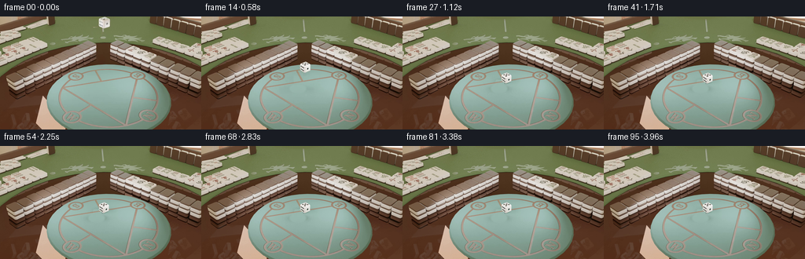
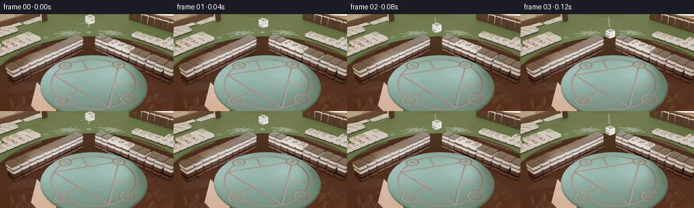
展开代码变化
--- 上一保存版本
+++ 本次保存版本
@@ -0,0 +1,132 @@
+"""Remove the red die throughout the original 96-frame timeline.
+
+Uses the stationary parts of the supplied footage as background plates, and
+unoccluded views of the white die to recover the small region of its left face
+that was hidden by the red die. No external assets are used.
+"""
+from pathlib import Path
+import cv2
+import numpy as np
+from PIL import Image
+from scipy.ndimage import gaussian_filter
+import artifact_io
+
+ROOT = Path(__file__).resolve().parent
+
+
+def read_video():
+ cap = cv2.VideoCapture(str(ROOT / 'source_video.mp4'))
+ images = []
+ while True:
+ ok, bgr = cap.read()
+ if not ok:
+ break
+ images.append(cv2.cvtColor(bgr, cv2.COLOR_BGR2RGB))
+ cap.release()
+ return np.asarray(images)
+
+
+def white_bounds(image):
+ # This central/right region is never obscured by the red die.
+ rgb = image.astype(np.int16)
+ r, g, b = rgb.transpose(2, 0, 1)
+ mask = (r > 166) & (g > 163) & (b > 145) & (np.abs(r-g) < 22)
+ mask[:, :648] = False
+ mask[:, 709:] = False
+ mask[448:] = False
+ n, labels, stats, _ = cv2.connectedComponentsWithStats(mask.astype(np.uint8))
+ idx = 1 + np.argmax(stats[1:, cv2.CC_STAT_AREA])
+ x, y, w, h, area = stats[idx]
+ return int(y), int(x+w-1), int(h)
+
+
+def white_template(image, top, right, height):
+ # Bright outer surface forms one connected component. Convex filling
+ # includes the black pips and retains the die's rounded silhouette.
+ x0, y0, x1, y1 = right-75, top-5, right+5, top+height+6
+ crop = image[y0:y1, x0:x1].astype(np.float32)
+ r, g, b = crop.transpose(2, 0, 1)
+ m = (r > 162) & (g > 159) & (b > 143) & (np.abs(r-g) < 25)
+ _, labels, stats, _ = cv2.connectedComponentsWithStats(m.astype(np.uint8))
+ idx = 1 + np.argmax(stats[1:, cv2.CC_STAT_AREA])
+ yy, xx = np.where(labels == idx)
+ points = np.column_stack((xx, yy)).astype(np.int32)
+ hull = cv2.convexHull(points)
+ alpha = np.zeros(crop.shape[:2], np.uint8)
+ cv2.fillConvexPoly(alpha, hull, 255)
+ alpha = gaussian_filter(alpha.astype(np.float32)/255, .55)
+ return crop, alpha, (x0, y0)
+
+
+def main():
+ low = np.load(ROOT / 'source_pixels.npz')['rgb']
+ high = read_video()
+ assert high.shape == (96, 720, 1280, 3)
+ # Both regions have multiple clear, stationary observations. The dice
+ # occupy the upper region only early in the clip and the lower region late.
+ background = high[0].astype(np.float32)
+ background[:260] = np.median(high[40:96, :260], axis=0)
+ background[260:510] = np.median(high[:3, 260:510], axis=0)
+
+ bounds = [white_bounds(f) for f in high]
+ donors = [4, 5, 6, 13, 14, 15]
+ templates = {i: white_template(high[i], *bounds[i]) for i in donors}
+ H, W = high.shape[1:3]
+ yy, xx = np.mgrid[:H, :W]
+ # Broad, soft removal of the red die's contact/airborne shadow. It is
+ # behind the same ground point throughout the vertical bouncing motion.
+ rho = np.sqrt(((xx-614.)/53.)**2 + ((yy-459.)/30.)**2)
+ shadow_mask = np.clip((1.12-rho)/.24, 0., 1.).astype(np.float32)
+ out = []
+ for i, frame in enumerate(high):
+ rgb = low[i].astype(np.int16)
+ r,g,b = rgb.transpose(2,0,1)
+ seed = (r-g>30) & (r-b>15) & (r>140)
+ seed[:, :115] = False
+ seed[:, 131:] = False
+ seed[100:] = False
+ sy, sx = np.where(seed)
+ xmin, xmax = max(570, int(sx.min()*5)-5), min(661, int((sx.max()+1)*5)+5)
+ ymin, ymax = max(0, int(sy.min()*5)-5), min(487, int((sy.max()+1)*5)+5)
+ patch = frame[ymin:ymax, xmin:xmax].astype(np.int16)
+ pr,pg,pb = patch.transpose(2,0,1)
+ pink = (pr-pg>28) & (pr-pb>24) & (pr>145) & (pg-pb<35)
+ _, lab, stats, _ = cv2.connectedComponentsWithStats(pink.astype(np.uint8))
+ k = 1 + np.argmax(stats[1:, cv2.CC_STAT_AREA])
+ py,px = np.where(lab == k)
+ hull = cv2.convexHull(np.column_stack((px+xmin,py+ymin)).astype(np.int32))
+ body = np.zeros((H,W), np.uint8)
+ cv2.fillConvexPoly(body, hull, 255)
+ body = cv2.dilate(body, cv2.getStructuringElement(cv2.MORPH_ELLIPSE,(5,5)))
+ body = gaussian_filter(body.astype(np.float32)/255, .55)
+ repair = np.maximum(body, shadow_mask)
+ edited = frame.astype(np.float32)*(1-repair[...,None]) + background*repair[...,None]
+
+ # Restore any previously hidden white surface with an independently
+ # observed view of that same die; retain every unobscured source pixel.
+ top, right, height = bounds[i]
+ donor = min(donors, key=lambda j: abs(bounds[j][0]-top))
+ sprite, alpha, (tx,ty) = templates[donor]
+ dt, dr, dh = bounds[donor]
+ scale = (right-628+1.) / (dr-628+1.)
+ scale = float(np.clip(scale, .97, 1.04))
+ matrix = np.array([[scale,0,right-scale*dr], [0,height/dh,top-(height/dh)*dt]], np.float32)
+ # Incorporate the cropped sprite's origin in the screen transform.
+ matrix[0,2] += scale*tx
+ matrix[1,2] += height/dh*ty
+ sprite_canvas = cv2.warpAffine(sprite, matrix, (W,H), flags=cv2.INTER_LINEAR)
+ alpha_canvas = cv2.warpAffine(alpha, matrix, (W,H), flags=cv2.INTER_LINEAR)
+ cover = alpha_canvas*body
+ edited = edited*(1-cover[...,None]) + sprite_canvas*cover[...,None]
+ edited = np.clip(np.rint(edited),0,255).astype(np.uint8)
+ small = np.asarray(Image.fromarray(edited).resize((256,144),Image.Resampling.LANCZOS))
+ # The decoder plus this resize reproduces the supplied source tensor
+ # exactly away from the local edit.
+ out.append(small)
+ frames = np.stack(out).astype(np.uint8)
+ artifact_io.save(frames, ROOT)
+ print('Saved', frames.shape, 'RGB frames, 24 fps.')
+
+
+if __name__ == '__main__':
+ main()
候选 02播放与检查图
点击播放 · 原生 RGB 像素

展开代码变化
--- 上一保存版本
+++ 本次保存版本
@@ -75,8 +75,13 @@
yy, xx = np.mgrid[:H, :W]
# Broad, soft removal of the red die's contact/airborne shadow. It is
# behind the same ground point throughout the vertical bouncing motion.
- rho = np.sqrt(((xx-614.)/53.)**2 + ((yy-459.)/30.)**2)
- shadow_mask = np.clip((1.12-rho)/.24, 0., 1.).astype(np.float32)
+ rho = np.sqrt(((xx-604.)/112.)**2 + ((yy-459.)/48.)**2)
+ shadow_mask = np.clip((1.16-rho)/.25, 0., 1.).astype(np.float32)
+ # Keep the white die's immediate contact shadow, but remove the red
+ # shadow's wide penumbra rather than leaving an annular trace behind.
+ shadow_mask *= np.clip((yy-429.)/8., 0., 1.)
+ white_penumbra = np.exp(-.5*(((xx-656.)/31.)**2 + ((yy-456.)/14.)**2))
+ fit_region = (xx>=691)&(xx<=714)&(yy>=443)&(yy<=479)
out = []
for i, frame in enumerate(high):
rgb = low[i].astype(np.int16)
@@ -100,7 +105,12 @@
body = cv2.dilate(body, cv2.getStructuringElement(cv2.MORPH_ELLIPSE,(5,5)))
body = gaussian_filter(body.astype(np.float32)/255, .55)
repair = np.maximum(body, shadow_mask)
- edited = frame.astype(np.float32)*(1-repair[...,None]) + background*repair[...,None]
+ attenuation = np.mean(background-frame.astype(np.float32),axis=2)
+ basis = white_penumbra[fit_region]
+ amplitude = np.clip(np.dot(basis,attenuation[fit_region])/np.dot(basis,basis),0.,26.)
+ # Reintroduce only the remaining white die's soft ground shadow.
+ clean_floor = background - (amplitude*white_penumbra*shadow_mask)[...,None]
+ edited = frame.astype(np.float32)*(1-repair[...,None]) + clean_floor*repair[...,None]
# Restore any previously hidden white surface with an independently
# observed view of that same die; retain every unobscured source pixel.
候选 03播放与检查图
点击播放 · 原生 RGB 像素

展开代码变化
代码未变化；重新保存了产物。
候选 04播放与检查图
点击播放 · 原生 RGB 像素
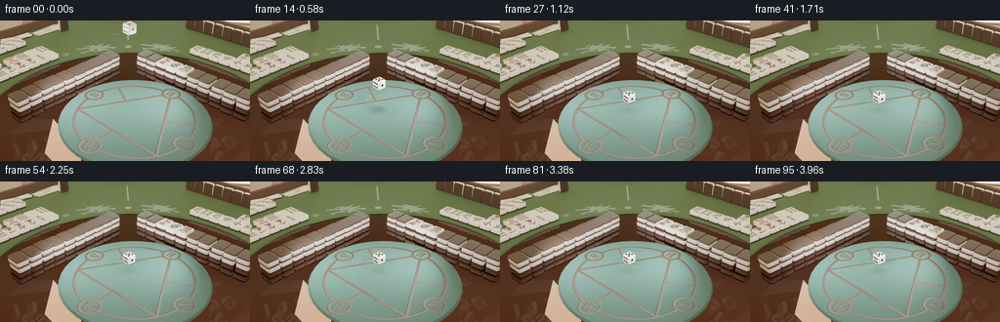
展开代码变化
--- 上一保存版本
+++ 本次保存版本
@@ -135,6 +135,11 @@
out.append(small)
frames = np.stack(out).astype(np.uint8)
artifact_io.save(frames, ROOT)
+ writer = cv2.VideoWriter(str(ROOT/'edited_video.mp4'), cv2.VideoWriter_fourcc(*'mp4v'),24,(256,144))
+ assert writer.isOpened()
+ for frame in frames:
+ writer.write(cv2.cvtColor(frame,cv2.COLOR_RGB2BGR))
+ writer.release()
print('Saved', frames.shape, 'RGB frames, 24 fps.')
可观测工具轨迹
实际执行的命令与返回图片。
命令 1exit 0
/bin/bash -lc 'ls -la && cat prompt.txt && cat GENERATION_RULES.md'
命令 2exit 0
/bin/bash -lc 'cat source_info.json && cat artifact_io.py && cat task_spec.json'
命令 3exit 0
/bin/bash -lc "python - <<'PY'
import numpy as np
from PIL import Image,ImageDraw
z=np.load('source_pixels.npz');print([(k,z[k].shape) for k in z.files]); a=z[z.files[0]]
c=Image.new('RGB',(8*240,6*216),(35,35,35));d=ImageDraw.Draw(c)
for i in range(48):
im=Image.fromarray(a[i]).crop((106,0,151,103)).resize((90,206))
x=i%8*240;y=i//8*216;c.paste(im,(x,y));d.text((x+94,y+5),str(i),fill='white')
im=Image.fromarray(a[i]).crop((111,52,146,95)).resize((140,172));c.paste(im,(x+96,y+24))
c.save('.tmp/crops.png')
PY"命令 4exit 0
/bin/bash -lc "python - <<'PY'
import numpy as np
from PIL import Image,ImageDraw
from scipy.ndimage import label
f=np.load('source_pixels.npz')['rgb'];c=Image.new('RGB',(6*400,300))
for j,i in enumerate([0,4,7,8,15,24]):
im=Image.fromarray(f[i]).crop((108,0,148,100)).resize((120,300));c.paste(im,(j*400,0));im=Image.fromarray(f[i]).crop((112,55,145,92)).resize((264,296));c.paste(im,(j*400+128,0))
c.save('.tmp/detail.png')
for i in range(24):
a=f[i].astype(float); r,g,b=a[:,:,0],a[:,:,1],a[:,:,2];m=(r-g>30)&(r-b>15)&(r>140);m[:,:110]=0;m[:,139:]=0;m[100:]=0
yy,xx=np.where(m);print(i,(xx.min(),yy.min(),xx.max(),yy.max()))
print('bg diff',np.mean(abs(f[0].astype(float)-f[95].astype(float))),np.max(abs(f[0].astype(float)-f[95].astype(float))))
PY"命令 5exit 0
/bin/bash -lc "python - <<'PY'
import numpy as np,cv2
from PIL import Image
f=np.load('source_pixels.npz')['rgb'];print(cv2.__version__)
for i in [1,8,16,32,48,95]:
gray=lambda a: cv2.cvtColor(a,cv2.COLOR_RGB2GRAY).astype(np.float32)
for rect in [(0,0,110,144),(150,0,256,144),(70,100,210,143)]:
x,y,X,Y=rect;a=gray(f[0,y:Y,x:X]);b=gray(f[i,y:Y,x:X]);print(i,rect,cv2.phaseCorrelate(a,b))
c=np.concatenate([f[0],f[95]],axis=1);Image.fromarray(c).resize((1536,432)).save('.tmp/compare.png')
PY"命令 6exit 0
/bin/bash -lc "python - <<'PY'
import cv2,numpy as np
from PIL import Image,ImageDraw
v=cv2.VideoCapture('source_video.mp4');c=Image.new('RGB',(4*450,450))
for i in range(11):
ret,a=v.read()
if i in [6,7,8,9]:
im=Image.fromarray(cv2.cvtColor(a,cv2.COLOR_BGR2RGB)).crop((570,280,720,430)).resize((450,450));c.paste(im,((i-6)*450,0))
c.save('.tmp/hi.png')
PY"命令 7exit 0
/bin/bash -lc "python - <<'PY'
import cv2,numpy as np
from PIL import Image,ImageDraw
cap=cv2.VideoCapture('source_video.mp4');aa=[]
while 1:
ok,a=cap.read()
if not ok:break
aa.append(cv2.cvtColor(a,cv2.COLOR_BGR2RGB))
a=np.array(aa)
print(a.shape)
c=Image.new('RGB',(1600,800),(20,20,20));d=ImageDraw.Draw(c)
for i in range(24):
f=a[i];crop=f[0:490,560:730];c.paste(Image.fromarray(crop).resize((136,392)),(i%12*133,i//12*400));d.text((i%12*133+5,i//12*400),str(i),fill='white')
c.save('.tmp/track.png')
for i in range(25):
f=a[i].astype(float);r,g,b=f[:,:,0],f[:,:,1],f[:,:,2]
m=(r>175)&(g>174)&(b>150);m[:,:630]=0;m[:,710:]=0;m[430:]=0
n,l,stats,cent=cv2.connectedComponentsWithStats(m.astype('uint8'))
s=1+np.argmax(stats[1:,cv2.CC_STAT_AREA]);print(i,stats[s],cent[s])
PY"命令 8exit 0
/bin/bash -lc "python - <<'PY'
import numpy as np,cv2
from PIL import Image
f=np.load('source_pixels.npz')['rgb'];cap=cv2.VideoCapture('source_video.mp4');ret,v=cap.read();v=cv2.cvtColor(v,cv2.COLOR_BGR2RGB)
for typ in [Image.Resampling.BILINEAR,Image.Resampling.LANCZOS,Image.Resampling.BOX,Image.Resampling.BICUBIC]:
a=np.array(Image.fromarray(v).resize((256,144),typ));print(typ, np.mean(abs(a.astype(float)-f[0].astype(float))))
for typ in [cv2.INTER_AREA,cv2.INTER_LINEAR]:
a=cv2.resize(v,(256,144),interpolation=typ);print('cv',typ,np.mean(abs(a.astype(float)-f[0].astype(float))))
PY"命令 9exit 0
/bin/bash -lc "python - <<'PY'
import cv2,numpy as np
from PIL import Image
cap=cv2.VideoCapture('source_video.mp4');a=[]
while True:
ret,f=cap.read()
if not ret:break
a.append(cv2.cvtColor(f,cv2.COLOR_BGR2RGB))
a=np.array(a)
c=Image.new('RGB',(1200,900))
for j,i in enumerate([0,5,6,7,15,95]):
im=Image.fromarray(a[i]).crop((545,280,735,475)).resize((400,410));c.paste(im,(j%3*400,j//3*450))
c.save('.tmp/shadows.png')
# Difference for floor (where it's clear in frame0)
for i in [0,15,95]:
im=Image.fromarray(a[i,280:490,550:720]);im.resize((680,840)).save('.tmp/full_%d.png'%i)
PY"命令 10exit 0
/bin/bash -lc "python - <<'PY'
import cv2,numpy as np
from PIL import Image,ImageDraw
cap=cv2.VideoCapture('source_video.mp4');aa=[]
while 1:
ok,a=cap.read()
if not ok:break
aa.append(cv2.cvtColor(a,cv2.COLOR_BGR2RGB))
a=np.array(aa)
for i in range(28):
f=a[i].astype(float);r,g,b=f[:,:,0],f[:,:,1],f[:,:,2]
m=(r>165)&(g>160)&(b>145)&(abs(r-g)<20);m[:,:610]=0;m[:,710:]=0;m[450:]=0
# locate in predicted region roughly from earlier stats
n,l,stats,cent=cv2.connectedComponentsWithStats(m.astype('uint8'))
inds=[s for s in range(1,n) if stats[s,4]>500]
s=max(inds,key=lambda s:stats[s,4]); print(i,stats[s],cent[s])
if i in [6,12,95]:
p=np.argwhere(l==s)[:,::-1];h=cv2.convexHull(p.astype(np.int32));print('hull',h[:,0].tolist())
PY"命令 11exit 0
/bin/bash -lc "cat > generate.py <<'PY'
\"\"\"Remove the red die throughout the original 96-frame timeline.
Uses the stationary parts of the supplied footage as background plates, and
unoccluded views of the white die to recover the small region of its left face
that was hidden by the red die. No external assets are used.
\"\"\"
from pathlib import Path
import cv2
import numpy as np
from PIL import Image
from scipy.ndimage import gaussian_filter
import artifact_io
ROOT = Path(__file__).resolve().parent
def read_video():
cap = cv2.VideoCapture(str(ROOT / 'source_video.mp4'))
images = []
while True:
ok, bgr = cap.read()
if not ok:
break
images.append(cv2.cvtColor(bgr, cv2.COLOR_BGR2RGB))
cap.release()
return np.asarray(images)
def white_bounds(image):
# This central/right region is never obscured by the red die.
rgb = image.astype(np.int16)
r, g, b = rgb.transpose(2, 0, 1)
mask = (r > 166) & (g > 163) & (b > 145) & (np.abs(r-g) < 22)
mask[:, :648] = False
mask[:, 709:] = False
mask[448:] = False
n, labels, stats, _ = cv2.connectedComponentsWithStats(mask.astype(np.uint8))
idx = 1 + np.argmax(stats[1:, cv2.CC_STAT_AREA])
x, y, w, h, area = stats[idx]
return int(y), int(x+w-1), int(h)
def white_template(image, top, right, height):
# Bright outer surface forms one connected component. Convex filling
# includes the black pips and retains the die's rounded silhouette.
x0, y0, x1, y1 = right-75, top-5, right+5, top+height+6
crop = image[y0:y1, x0:x1].astype(np.float32)
r, g, b = crop.transpose(2, 0, 1)
m = (r > 162) & (g > 159) & (b > 143) & (np.abs(r-g) < 25)
_, labels, stats, _ = cv2.connectedComponentsWithStats(m.astype(np.uint8))
idx = 1 + np.argmax(stats[1:, cv2.CC_STAT_AREA])
yy, xx = np.where(labels == idx)
points = np.column_stack((xx, yy)).astype(np.int32)
hull = cv2.convexHull(points)
alpha = np.zeros(crop.shape[:2], np.uint8)
cv2.fillConvexPoly(alpha, hull, 255)
alpha = gaussian_filter(alpha.astype(np.float32)/255, .55)
return crop, alpha, (x0, y0)
def main():
low = np.load(ROOT / 'source_pixels.npz')['rgb']
high = read_video()
assert high.shape == (96, 720, 1280, 3)
# Both regions have multiple clear, stationary observations. The dice
# occupy the upper region only early in the clip and the lower region late.
background = high[0].astype(np.float32)
background[:260] = np.median(high[40:96, :260], axis=0)
background[260:510] = np.median(high[:3, 260:510], axis=0)
bounds = [white_bounds(f) for f in high]
donors = [4, 5, 6, 13, 14, 15]
templates = {i: white_template(high[i], *bounds[i]) for i in donors}
H, W = high.shape[1:3]
yy, xx = np.mgrid[:H, :W]
# Broad, soft removal of the red die's contact/airborne shadow. It is
# behind the same ground point throughout the vertical bouncing motion.
rho = np.sqrt(((xx-614.)/53.)**2 + ((yy-459.)/30.)**2)
shadow_mask = np.clip((1.12-rho)/.24, 0., 1.).astype(np.float32)
out = []
for i, frame in enumerate(high):
rgb = low[i].astype(np.int16)
r,g,b = rgb.transpose(2,0,1)
seed = (r-g>30) & (r-b>15) & (r>140)
seed[:, :115] = False
seed[:, 131:] = False
seed[100:] = False
sy, sx = np.where(seed)
xmin, xmax = max(570, int(sx.min()*5)-5), min(661, int((sx.max()+1)*5)+5)
ymin, ymax = max(0, int(sy.min()*5)-5), min(487, int((sy.max()+1)*5)+5)
patch = frame[ymin:ymax, xmin:xmax].astype(np.int16)
pr,pg,pb = patch.transpose(2,0,1)
pink = (pr-pg>28) & (pr-pb>24) & (pr>145) & (pg-pb<35)
_, lab, stats, _ = cv2.connectedComponentsWithStats(pink.astype(np.uint8))
k = 1 + np.argmax(stats[1:, cv2.CC_STAT_AREA])
py,px = np.where(lab == k)
hull = cv2.convexHull(np.column_stack((px+xmin,py+ymin)).astype(np.int32))
body = np.zeros((H,W), np.uint8)
cv2.fillConvexPoly(body, hull, 255)
body = cv2.dilate(body, cv2.getStructuringElement(cv2.MORPH_ELLIPSE,(5,5)))
body = gaussian_filter(body.astype(np.float32)/255, .55)
repair = np.maximum(body, shadow_mask)
edited = frame.astype(np.float32)*(1-repair[...,None]) + background*repair[...,None]
# Restore any previously hidden white surface with an independently
# observed view of that same die; retain every unobscured source pixel.
top, right, height = bounds[i]
donor = min(donors, key=lambda j: abs(bounds[j][0]-top))
sprite, alpha, (tx,ty) = templates[donor]
dt, dr, dh = bounds[donor]
scale = (right-628+1.) / (dr-628+1.)
scale = float(np.clip(scale, .97, 1.04))
matrix = np.array([[scale,0,right-scale*dr], [0,height/dh,top-(height/dh)*dt]], np.float32)
# Incorporate the cropped sprite's origin in the screen transform.
matrix[0,2] += scale*tx
matrix[1,2] += height/dh*ty
sprite_canvas = cv2.warpAffine(sprite, matrix, (W,H), flags=cv2.INTER_LINEAR)
alpha_canvas = cv2.warpAffine(alpha, matrix, (W,H), flags=cv2.INTER_LINEAR)
cover = alpha_canvas*body
edited = edited*(1-cover[...,None]) + sprite_canvas*cover[...,None]
edited = np.clip(np.rint(edited),0,255).astype(np.uint8)
small = np.asarray(Image.fromarray(edited).resize((256,144),Image.Resampling.LANCZOS))
# The decoder plus this resize reproduces the supplied source tensor
# exactly away from the local edit.
out.append(small)
frames = np.stack(out).astype(np.uint8)
artifact_io.save(frames, ROOT)
print('Saved', frames.shape, 'RGB frames, 24 fps.')
if __name__ == '__main__':
main()
PY
python generate.py"命令 12exit 0
/bin/bash -lc "python - <<'PY'
from PIL import Image,ImageDraw
c=Image.new('RGB',(8*200,3*250),(25,25,25));d=ImageDraw.Draw(c)
for i in range(24):
im=Image.open('frames/%02d.png'%i).crop((114,0,142,99)).resize((56,198),Image.Resampling.NEAREST);x=i%8*200;y=i//8*250;c.paste(im,(x,y+20));im=Image.open('frames/%02d.png'%i).crop((118,54,142,98)).resize((120,220),Image.Resampling.NEAREST);c.paste(im,(x+65,y+20));d.text((x+5,y),str(i),fill='white')
c.save('.tmp/result_crops.png')
PY"命令 13exit 0
/bin/bash -lc "python - <<'PY'
from PIL import Image
c=Image.new('RGB',(1200,800))
for j,p in enumerate(['first_frame.png','frames/00.png','frames/05.png','frames/15.png','frames/23.png','frames/95.png']):
im=Image.open(p).crop((106,72,151,110)).resize((400,338));c.paste(im,(j%3*400,j//3*400))
c.save('.tmp/floor.png')
PY"命令 14exit 0
/bin/bash -lc "python - <<'PY'
import cv2,numpy as np
from PIL import Image
cap=cv2.VideoCapture('source_video.mp4');a=[]
while 1:
ok,f=cap.read()
if not ok:break
a.append(cv2.cvtColor(f,cv2.COLOR_BGR2RGB))
a=np.array(a);d=np.mean(a[0].astype(float)-a[95].astype(float),axis=2)
# exclude dice body to show floor attenuation
c=np.clip(d[420:515,530:740]*10+128,0,255).astype('uint8');Image.fromarray(c).resize((1050,475)).save('.tmp/diff.png')
for y in [425,435,445,455,465,475,485,495,505]:
print(y, [(x,round(float(d[y-2:y+3,x-2:x+3].mean()),1)) for x in range(550,731,10)])
PY"命令 15exit 0
/bin/bash -lc "cp pixels.npz .tmp/candidate_01_pixels.npz && cp inspection.png .tmp/candidate_01_inspection.png python - <<'PY' p='generate.py' s=open(p).read() s=s.replace(\"rho = np.sqrt(((xx-614.)/53.)**2 + ((yy-459.)/30.)**2)\\n shadow_mask = np.clip((1.12-rho)/.24, 0., 1.).astype(np.float32)\",\"rho = np.sqrt(((xx-604.)/112.)**2 + ((yy-459.)/48.)**2)\\n shadow_mask = np.clip((1.16-rho)/.25, 0., 1.).astype(np.float32)\\n # Keep the white die's immediate contact shadow, but remove the red\\n # shadow's wide penumbra rather than leaving an annular trace behind.\\n shadow_mask *= np.clip((yy-429.)/8., 0., 1.)\\n white_penumbra = np.exp(-.5*(((xx-656.)/31.)**2 + ((yy-456.)/14.)**2))\\n fit_region = (xx>=691)&(xx<=714)&(yy>=443)&(yy<=479)\") s=s.replace(\"edited = frame.astype(np.float32)*(1-repair[...,None]) + background*repair[...,None]\", \"attenuation = np.mean(background-frame.astype(np.float32),axis=2)\\n basis = white_penumbra[fit_region]\\n amplitude = np.clip(np.dot(basis,attenuation[fit_region])/np.dot(basis,basis),0.,26.)\\n # Reintroduce only the remaining white die's soft ground shadow.\\n clean_floor = background - (amplitude*white_penumbra*shadow_mask)[...,None]\\n edited = frame.astype(np.float32)*(1-repair[...,None]) + clean_floor*repair[...,None]\") open(p,'w').write(s) PY python generate.py"
命令 16exit 0
/bin/bash -lc "python - <<'PY'
from PIL import Image
import numpy as np
c=Image.new('RGB',(1200,800))
for j,p in enumerate(['first_frame.png','frames/00.png','frames/05.png','frames/15.png','frames/23.png','frames/95.png']):
im=Image.open(p).crop((106,72,151,110)).resize((400,338));c.paste(im,(j%3*400,j//3*400))
c.save('.tmp/floor_final.png')
a=np.load('pixels.npz')['pixels'];print(a.shape,a.dtype)
PY"命令 17exit 1
/bin/bash -lc "command -v ffmpeg && ls -l pixels.npz index.html inspection.png generate.py && find frames -name '*.png' | wc -l"
命令 18exit 0
/bin/bash -lc "ls -l pixels.npz index.html inspection.png generate.py; find frames -name '*.png' | wc -l; python - <<'PY'
import cv2,numpy as np
from pathlib import Path
p=np.load('pixels.npz')['pixels'].transpose(2,0,1)
a=np.stack([(p>>16)&255,(p>>8)&255,p&255],axis=-1).astype('uint8')
v=cv2.VideoWriter('edited_video.mp4',cv2.VideoWriter_fourcc(*'mp4v'),24,(256,144))
assert v.isOpened()
for f in a:v.write(cv2.cvtColor(f,cv2.COLOR_RGB2BGR))
v.release()
assert Path('edited_video.mp4').stat().st_size>0
print('Wrote edited_video.mp4')
PY"命令 19exit 0
/bin/bash -lc "python - <<'PY' p='generate.py';s=open(p).read();s=s.replace(\"artifact_io.save(frames, ROOT)\\n print\", \"artifact_io.save(frames, ROOT)\\n writer = cv2.VideoWriter(str(ROOT/'edited_video.mp4'), cv2.VideoWriter_fourcc(*'mp4v'),24,(256,144))\\n assert writer.isOpened()\\n for frame in frames:\\n writer.write(cv2.cvtColor(frame,cv2.COLOR_RGB2BGR))\\n writer.release()\\n print\");open(p,'w').write(s) PY python generate.py"
视觉工具实际返回图片 1
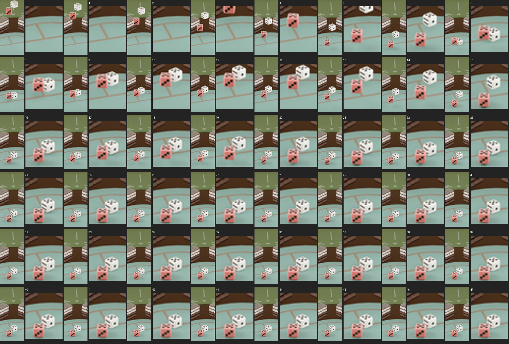
视觉工具实际返回图片 2
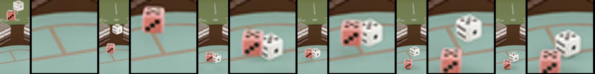
视觉工具实际返回图片 3
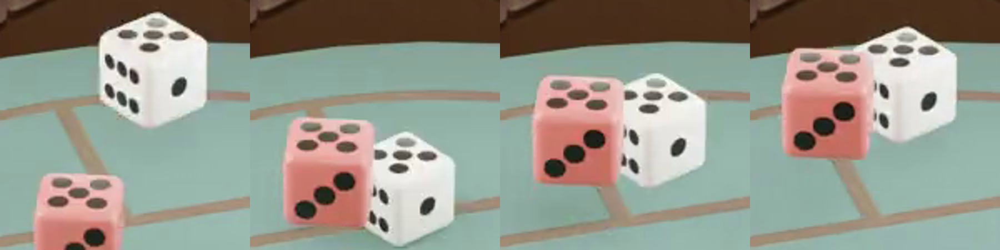
视觉工具实际返回图片 4
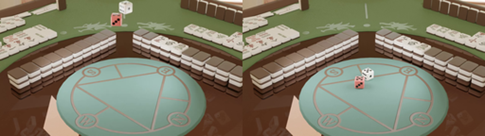
视觉工具实际返回图片 5
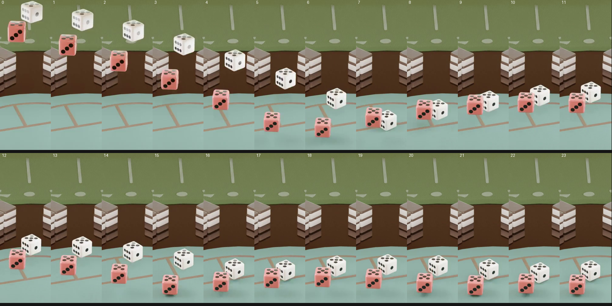
视觉工具实际返回图片 6
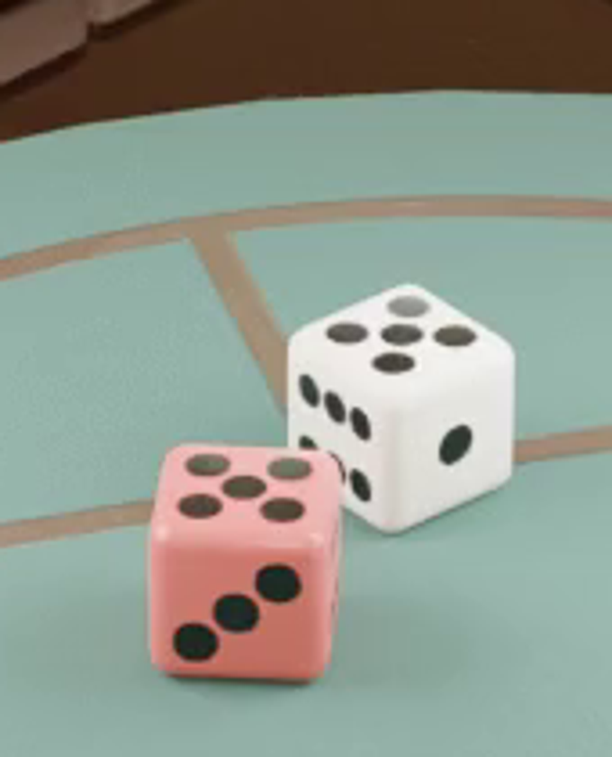
视觉工具实际返回图片 7
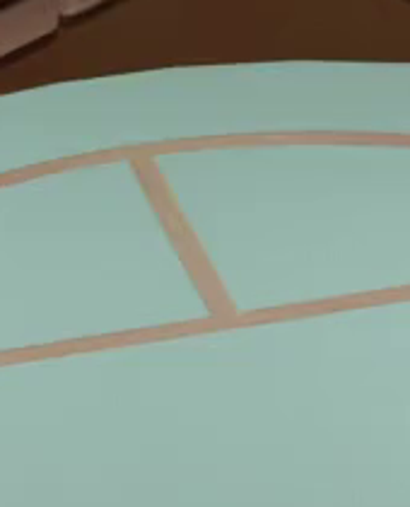
视觉工具实际返回图片 8

视觉工具实际返回图片 9
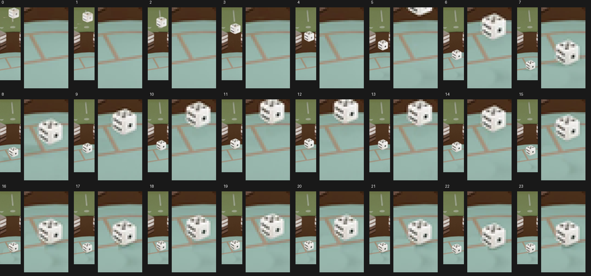
视觉工具实际返回图片 10
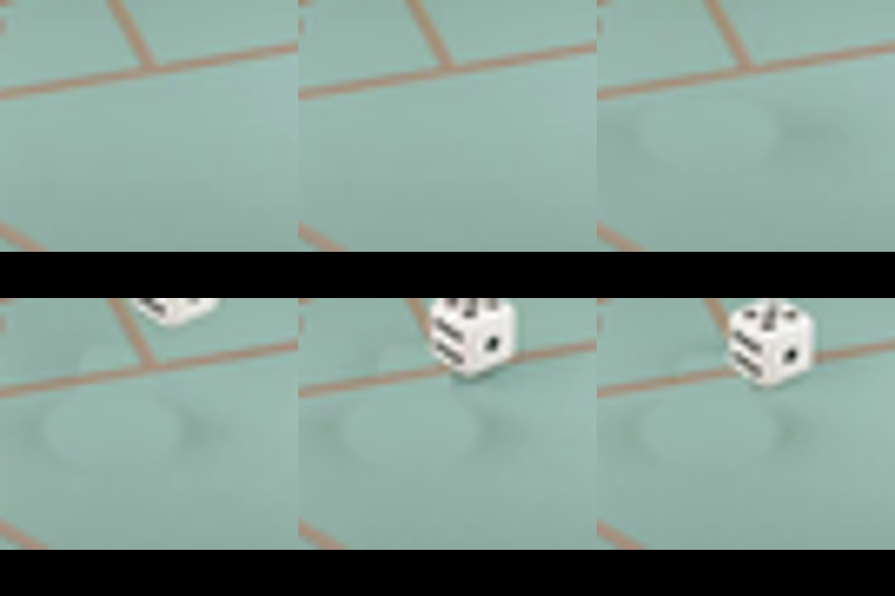
视觉工具实际返回图片 11
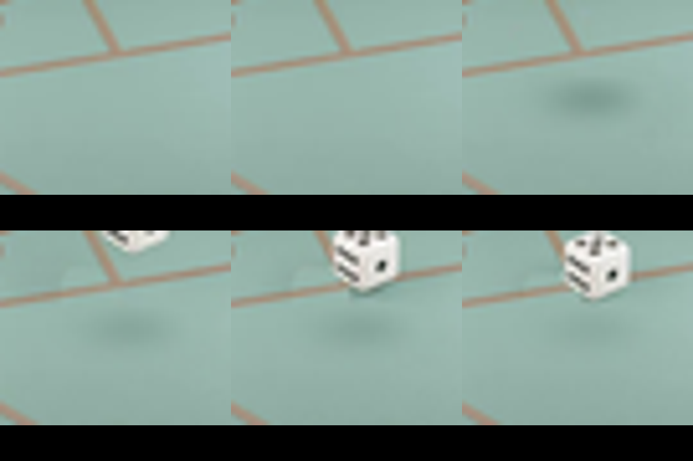
保存候选 4 份；完成命令 19 次；可验证图片返回 11 张。原始 API 响应与完整日志保留在本地。